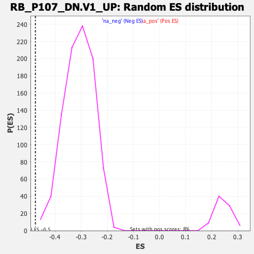

| | | Dataset | DE_genes2 |
| Phenotype | NoPhenotypeAvailable |
| Upregulated in class | na_neg |
| GeneSet | RB_P107_DN.V1_UP |
| Enrichment Score (ES) | -0.4753354 |
| Normalized Enrichment Score (NES) | -1.5427712 |
| Nominal p-value | 0.0010917031 |
| FDR q-value | 0.013008667 |
| FWER p-Value | 0.33 |
Table: GSEA Results Summary
 Fig 1: Enrichment plot: RB_P107_DN.V1_UP
Fig 1: Enrichment plot: RB_P107_DN.V1_UP
Profile of the Running ES Score & Positions of GeneSet Members on the Rank Ordered List
| PROBE | GENE SYMBOL | GENE_TITLE | RANK IN GENE LIST | RANK METRIC SCORE | RUNNING ES | CORE ENRICHMENT | | 1 | TAGLN | | | 341 | 4.258 | -0.0057 | No |
| 2 | FSTL1 | | | 354 | 4.212 | 0.0085 | No |
| 3 | PML | | | 405 | 3.956 | 0.0195 | No |
| 4 | LGALS3BP | | | 741 | 3.127 | 0.0102 | No |
| 5 | MFGE8 | | | 820 | 3.011 | 0.0161 | No |
| 6 | PAQR4 | | | 844 | 2.958 | 0.0252 | No |
| 7 | COL6A1 | | | 874 | 2.901 | 0.0337 | No |
| 8 | VEGFB | | | 1047 | 2.678 | 0.0327 | No |
| 9 | COL1A1 | | | 1181 | 2.496 | 0.0334 | No |
| 10 | COL6A2 | | | 1406 | 2.265 | 0.0278 | No |
| 11 | ETHE1 | | | 1456 | 2.219 | 0.0327 | No |
| 12 | CD81 | | | 1537 | 2.146 | 0.0354 | No |
| 13 | COX6B2 | | | 1636 | 2.052 | 0.0367 | No |
| 14 | FBLN5 | | | 1726 | 1.967 | 0.0383 | No |
| 15 | DYNLT1 | | | 1903 | 1.838 | 0.0341 | No |
| 16 | LOXL1 | | | 2243 | 1.592 | 0.0191 | No |
| 17 | SNCG | | | 2366 | 1.513 | 0.0170 | No |
| 18 | ACTG2 | | | 2592 | 1.394 | 0.0082 | No |
| 19 | COL1A2 | | | 2789 | 1.291 | 0.0008 | No |
| 20 | LCK | | | 3012 | 1.190 | -0.0085 | No |
| 21 | GSTM2 | | | 3029 | 1.181 | -0.0053 | No |
| 22 | PIDD1 | | | 3112 | 1.149 | -0.0062 | No |
| 23 | PTMA | | | 3159 | 1.129 | -0.0050 | No |
| 24 | SRPX2 | | | 3357 | 1.055 | -0.0132 | No |
| 25 | COL16A1 | | | 3685 | 0.937 | -0.0298 | No |
| 26 | BICC1 | | | 3935 | 0.857 | -0.0420 | No |
| 27 | TSSC4 | | | 4051 | 0.822 | -0.0461 | No |
| 28 | WDR90 | | | 4081 | 0.813 | -0.0450 | No |
| 29 | SAMD10 | | | 4187 | 0.781 | -0.0486 | No |
| 30 | PCOLCE | | | 4320 | 0.744 | -0.0540 | No |
| 31 | CDKN1C | | | 4684 | 0.641 | -0.0739 | No |
| 32 | TRPV2 | | | 4940 | 0.584 | -0.0873 | No |
| 33 | SERPINF1 | | | 4952 | 0.582 | -0.0859 | No |
| 34 | EDN2 | | | 5149 | 0.530 | -0.0960 | No |
| 35 | ABAT | | | 5325 | 0.487 | -0.1049 | No |
| 36 | SYCE2 | | | 5414 | 0.467 | -0.1087 | No |
| 37 | RHEBL1 | | | 5545 | 0.439 | -0.1150 | No |
| 38 | EFS | | | 5868 | 0.372 | -0.1333 | No |
| 39 | COL5A1 | | | 6197 | 0.304 | -0.1522 | No |
| 40 | FBLN2 | | | 6389 | 0.266 | -0.1629 | No |
| 41 | CDH11 | | | 6629 | 0.218 | -0.1767 | No |
| 42 | BGN | | | 6776 | 0.189 | -0.1850 | No |
| 43 | STMN1 | | | 7057 | 0.145 | -0.2015 | No |
| 44 | TCF19 | | | 7598 | 0.049 | -0.2342 | No |
| 45 | CDH2 | | | 7836 | 0.012 | -0.2486 | No |
| 46 | SPIRE2 | | | 7860 | 0.010 | -0.2500 | No |
| 47 | KHDRBS3 | | | 7914 | 0.003 | -0.2532 | No |
| 48 | TUBG1 | | | 7955 | -0.003 | -0.2557 | No |
| 49 | RPA2 | | | 8108 | -0.028 | -0.2648 | No |
| 50 | TMEM45B | | | 8202 | -0.043 | -0.2703 | No |
| 51 | NAA40 | | | 8625 | -0.115 | -0.2956 | No |
| 52 | HMCES | | | 8984 | -0.189 | -0.3168 | No |
| 53 | S100A4 | | | 9344 | -0.275 | -0.3377 | No |
| 54 | SIVA1 | | | 9918 | -0.433 | -0.3711 | No |
| 55 | NXT1 | | | 10036 | -0.470 | -0.3766 | No |
| 56 | BLVRB | | | 10166 | -0.514 | -0.3826 | No |
| 57 | LYPD1 | | | 10263 | -0.542 | -0.3865 | No |
| 58 | IPO9 | | | 10489 | -0.618 | -0.3980 | No |
| 59 | NSMCE2 | | | 10641 | -0.675 | -0.4049 | No |
| 60 | CDK2 | | | 10886 | -0.760 | -0.4170 | No |
| 61 | PRDX4 | | | 11110 | -0.845 | -0.4276 | No |
| 62 | RPL39L | | | 11407 | -0.971 | -0.4422 | No |
| 63 | FBN1 | | | 11664 | -1.073 | -0.4540 | No |
| 64 | ANAPC11 | | | 11722 | -1.095 | -0.4536 | No |
| 65 | TYRP1 | | | 11986 | -1.214 | -0.4653 | No |
| 66 | FKBP10 | | | 12001 | -1.222 | -0.4618 | No |
| 67 | BEX2 | | | 12019 | -1.231 | -0.4585 | No |
| 68 | LIG1 | | | 12096 | -1.272 | -0.4586 | No |
| 69 | RBPMS2 | | | 12331 | -1.394 | -0.4680 | Yes |
| 70 | RPA3 | | | 12343 | -1.397 | -0.4637 | Yes |
| 71 | HAUS8 | | | 12459 | -1.454 | -0.4655 | Yes |
| 72 | RFC2 | | | 12578 | -1.523 | -0.4673 | Yes |
| 73 | CA2 | | | 12663 | -1.573 | -0.4669 | Yes |
| 74 | PRIM2 | | | 12678 | -1.578 | -0.4621 | Yes |
| 75 | E2F8 | | | 12689 | -1.584 | -0.4571 | Yes |
| 76 | CCNE1 | | | 12690 | -1.585 | -0.4515 | Yes |
| 77 | DUSP1 | | | 12720 | -1.599 | -0.4476 | Yes |
| 78 | CHAF1B | | | 12733 | -1.605 | -0.4426 | Yes |
| 79 | UBR7 | | | 12817 | -1.661 | -0.4418 | Yes |
| 80 | SLIT3 | | | 12861 | -1.693 | -0.4384 | Yes |
| 81 | RRM1 | | | 13038 | -1.791 | -0.4428 | Yes |
| 82 | RPA1 | | | 13109 | -1.830 | -0.4406 | Yes |
| 83 | POLD1 | | | 13115 | -1.833 | -0.4344 | Yes |
| 84 | NCAPD2 | | | 13788 | -2.321 | -0.4671 | Yes |
| 85 | MCM5 | | | 13861 | -2.378 | -0.4631 | Yes |
| 86 | FEN1 | | | 13911 | -2.426 | -0.4574 | Yes |
| 87 | MCM7 | | | 13952 | -2.457 | -0.4512 | Yes |
| 88 | RFC5 | | | 13956 | -2.460 | -0.4426 | Yes |
| 89 | INCENP | | | 13962 | -2.468 | -0.4342 | Yes |
| 90 | DHFR | | | 13968 | -2.471 | -0.4257 | Yes |
| 91 | NELFE | | | 14017 | -2.507 | -0.4198 | Yes |
| 92 | ASF1B | | | 14048 | -2.550 | -0.4126 | Yes |
| 93 | CCNF | | | 14092 | -2.590 | -0.4060 | Yes |
| 94 | TCFL5 | | | 14170 | -2.660 | -0.4013 | Yes |
| 95 | POLE | | | 14456 | -2.944 | -0.4082 | Yes |
| 96 | DNAJC9 | | | 14857 | -3.434 | -0.4204 | Yes |
| 97 | SLBP | | | 14893 | -3.498 | -0.4101 | Yes |
| 98 | PCNA | | | 14896 | -3.501 | -0.3978 | Yes |
| 99 | FANCA | | | 14968 | -3.594 | -0.3894 | Yes |
| 100 | MCM2 | | | 15006 | -3.658 | -0.3787 | Yes |
| 101 | GMNN | | | 15032 | -3.688 | -0.3671 | Yes |
| 102 | E2F1 | | | 15036 | -3.695 | -0.3542 | Yes |
| 103 | HMGN2 | | | 15128 | -3.819 | -0.3462 | Yes |
| 104 | CDC25B | | | 15237 | -3.978 | -0.3387 | Yes |
| 105 | POLE2 | | | 15406 | -4.310 | -0.3337 | Yes |
| 106 | DNA2 | | | 15436 | -4.365 | -0.3200 | Yes |
| 107 | GINS4 | | | 15688 | -4.879 | -0.3180 | Yes |
| 108 | RRM2 | | | 15702 | -4.911 | -0.3013 | Yes |
| 109 | MCM6 | | | 15829 | -5.218 | -0.2905 | Yes |
| 110 | NCAPH | | | 15843 | -5.247 | -0.2727 | Yes |
| 111 | FANCL | | | 15854 | -5.274 | -0.2546 | Yes |
| 112 | PRIM1 | | | 15856 | -5.276 | -0.2360 | Yes |
| 113 | ORC6 | | | 15923 | -5.453 | -0.2207 | Yes |
| 114 | RFC3 | | | 16020 | -5.728 | -0.2062 | Yes |
| 115 | GTSE1 | | | 16026 | -5.744 | -0.1861 | Yes |
| 116 | DCLRE1A | | | 16034 | -5.780 | -0.1661 | Yes |
| 117 | MAD2L1 | | | 16043 | -5.805 | -0.1460 | Yes |
| 118 | PRC1 | | | 16103 | -5.960 | -0.1284 | Yes |
| 119 | CCNE2 | | | 16115 | -5.986 | -0.1079 | Yes |
| 120 | CENPH | | | 16211 | -6.387 | -0.0910 | Yes |
| 121 | KIF4A | | | 16226 | -6.459 | -0.0690 | Yes |
| 122 | CDC45 | | | 16272 | -6.693 | -0.0480 | Yes |
| 123 | WDHD1 | | | 16469 | -8.658 | -0.0292 | Yes |
| 124 | CENPK | | | 16485 | -9.298 | 0.0028 | Yes |
Table: GSEA details [plain text format]

Fig 2: RB_P107_DN.V1_UP: Random ES distribution
Gene set null distribution of ES for RB_P107_DN.V1_UP